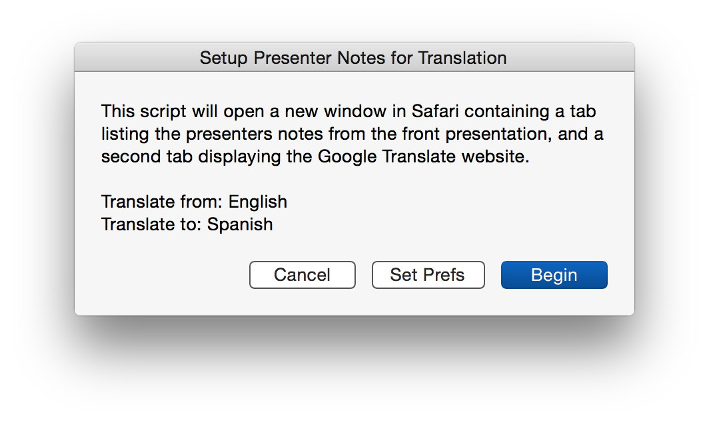
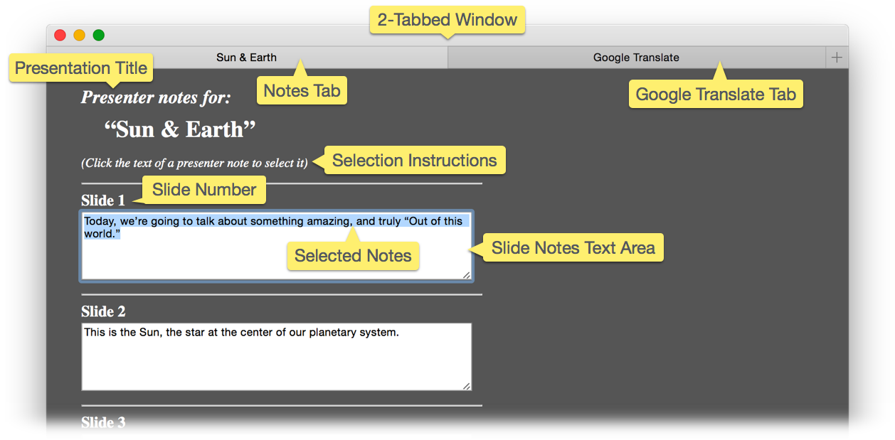
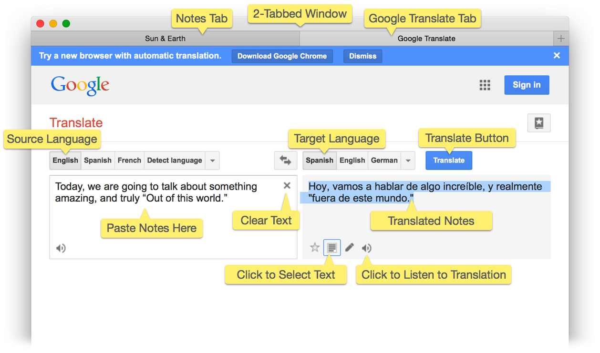
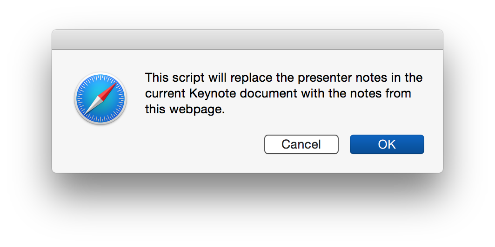

Large international corporations often create sales and marketing materials that are replicated by their marketing and communications teams into publications designed for use with various languages.
But for smaller organizations or individuals, translating materials can be a challenging process. This tutorial features two Applescript scripts that will make is easier for you to translate a presentation’s presenter notes using the online Google Translate service.
NOTE: These scripts are compelling examples of how AppleScript can dynamically create and interact with HTML content via the Safari web-browser application.
DOWNLOAD an archive containing three scripts and the example presentation file. In the unpacked archive folder, launch the “Automation Tools Installer” applet to install the scripts.
setAppleScript's text item delimitersto thesearchString
118
set theitemListto everytext itemofsourceText
119
setAppleScript's text item delimitersto thereplacementString
120
setsourceTextto theitemListasstring
121
setAppleScript's text item delimitersto ""
122
returnsourceText
123
endreplaceText
Running the Setup Script
With the installation of the scripts completed, and the presentation opened in Keynote, you are now ready to begin the process of translating the document’s presenter notes.
DO THIS ►Select the installed script “Setup Presenter Notes for Translation” from the system-wide Script Menu. A confirmation dialog will appear:
(⬇ see below ) The opening dialog of the “Setup Presenter Notes for Translation” script. Click the “Set Prefs” button to select the languages to be translated from and to.

When run, the script will open a new window in Safari containing two tabs:

(⬆ see above ) The new Safari browser window with two tabs: the current tab displaying the presenter notes of the frontmost presentation, and second tab displaying the Google Translate website.
(⬇ see below ) The second browser tab displaying the Google Translate website, with two text fields: the left for entering the text to be translated, and the right containing the translation of the source text.

Translating the Slide Notes
Translating the slide presenter notes involves following these simple steps for each slide note:
Select & Copy the Slide’s Notes • Select the text of a slide note by clicking in the text area of the note. The text will auto-select. Copy the selected text to the clipboard (⌘C).
Paste & Translate • In the browser window select the Google Translate tab, and paste the copied text into the text input field on the left. Click the Translate button over the right text field to translate the text.
Select, Copy, & Replace • Under the text field containing the translation, click the button for selecting the text. Copy the selected text to the clipboard (⌘C). Click the inactive browser window tab to reveal the slide notes, and replace the selected text of the source slide note with the translation text that’s currently on the clipboard (⌘V).
Repeat these steps for each slide note.
Replacing Existing Presenter Notes
Once the slide notes in the browser window have been replaced with their translations, they can be used to replace the presenter notes in the open Keynote presentation file. This process can be completed quickly using the script provided here.
DO THIS ►Select the installed script “Replace Notes with Localized Notes” from the system-wide Script Menu. A confirmation dialog will appear:

Replace Notes with Localized Notes
01
tellapplication "Keynote"
02
setKeynoteStatusto (existsdocument 1)
03
end tell
04
05
tellapplication "Safari"
06
activate
07
ifKeynoteStatusisfalsethen "There is no document in Keynote."
08
if not (existsdocument 1) then error "There is no document open in Safari."
09
display dialog "This script will replace the presenter notes in the current Keynote document with the notes from this webpage." with icon 1
10
try
11
setpageSourcetosourceofcurrent tabofwindow 1
12
ifpageSourcecontains "Page Generated for Translation" then
13
setelementCountto ¬
14
(do JavaScript "document.getElementsByTagName('textarea').length;" incurrent tabofwindow 1) asinteger
15
settranslatedNotesto {}
16
repeat withifrom 1 toelementCount
17
setthisNoteto ¬
18
(do JavaScript "document.getElementById('txtarea" & (iasstring) & "').value;" incurrent tabofwindow 1)
19
set the end oftranslatedNotestothisNote
20
end repeat
21
else
22
display alert "INCORRECT PAGE" message "The current page was not generated by the translation script."
23
errornumber -128
24
end if
25
display dialog "Notes extraction complete. Click “Continue” to switch to Keynote and replace the notes in the current document." buttons {"Cancel", "Continue"} default button 2 with icon 1
settargetSlideto (the firstslidewhoseslide numberis i)
40
telltargetSlide
41
setpresenter notesto (itemioftranslatedNotes)
42
end tell
43
end repeat
44
end tell
45
on errorerrorMessage number errorNumber
46
iferrorNumberis not -128 then
47
display alert "ERROR" messageerrorMessage
48
end if
49
errornumber -128
50
end try
51
end tell
Once the script has finished, the presenter notes in the frontmost Keynote document will be replaced with the translations entered in the Safari browser tab.
TIP: You can use the Simple Play & Say script (included with the installer) to have your slideshow spoken and presented to you using the default system voice. Upgrade your system voices to the free high-quality voices in multiple languages available from the Speech & Dictation system preference pane.
Mention of third-party websites and products is for informational purposes only and constitutes neither an endorsement nor a recommendation. MACOSXAUTOMATION.COM assumes no responsibility with regard to the selection, performance or use of information or products found at third-party websites. MACOSXAUTOMATION.COM provides this only as a convenience to our users. MACOSXAUTOMATION.COM has not tested the information found on these sites and makes no representations regarding its accuracy or reliability. There are risks inherent in the use of any information or products found on the Internet, and MACOSXAUTOMATION.COM assumes no responsibility in this regard. Please understand that a third-party site is independent from MACOSXAUTOMATION.COM and that MACOSXAUTOMATION.COM has no control over the content on that website. Please contact the vendor for additional information.